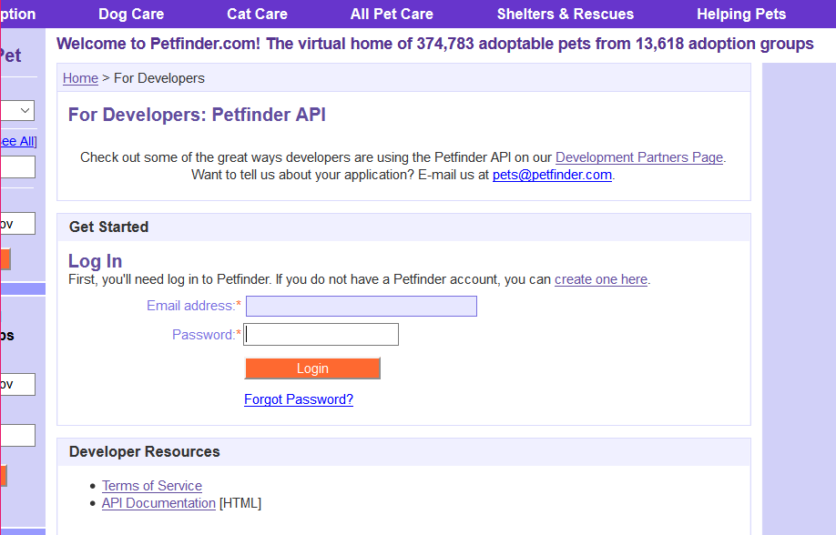
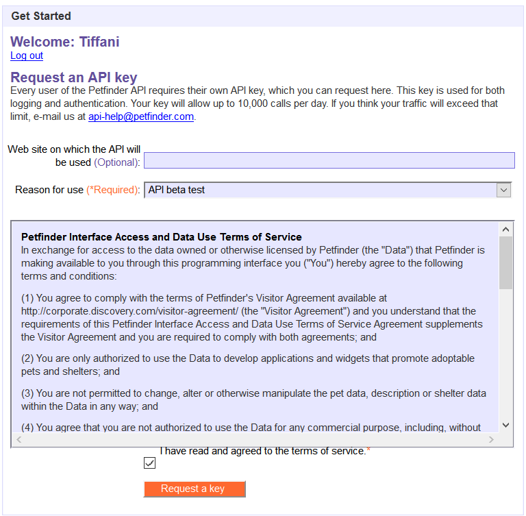
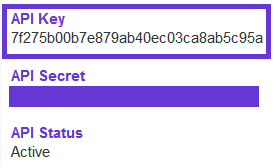

Set Up Your API Credentials
First Things First
If you haven't already, you need to sign up for a Petfinder account on their main site here. Once you have an account, you will access everything for the API from the developer page as seen below.
Your API Key
Once you log in, you must apply for your API key. This is how Petfinder tracks the identity of users accessing their database as well as the frequency they do so. There is an option to provide your site's address, and I recommend that you do as it allows Petfinder to add a level of security. If anyone else tries to fraudulently use your key from a different site, they can track where the call came from and take measures to protect both you and their database.
There are limits to how often you can access the database, which is stated in the developer documentation page. The limits are incredibly high and you are unlikely to reach them, but if you find yourself doing so on a regular basis, you can contact them to request to have your limits increased.
Petfinder provides you with an API key and an API secret. It is important to protect both from the public. The Petfinder developer page states that you can use the API key publicly, and to keep the API secret from public documents, as it is used for more sensitive information. However, this is not what you should do. It is considered good practice to hide both from the public documentation of your site. That being said for this guide I will be openly using my API Key to keep things simple. 
You can read more about how to keep your API key safe here.